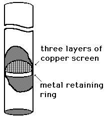
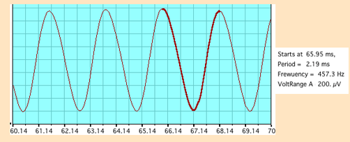

Rijke Tube Construction
|

|
The Rijke tube resonator used in the example was made from stainless steel tubing of about 3.5 cm diameter. A prepared strip of copper screen wire was folded to form three layers in a square slightly larger than the pipe diameter. It was inserted about a fifth of the way up the tube and held in place by a metal ring made of spring steel.
The retaining ring has been necessary in my experience. While the copper screen is elastic enough to hold itself in place when it is new, it quickly loses its "springiness" after a few heatings and just drops out. The copper screens do not last long in any case, developing a hole in the center after a couple of dozen heatings.
A useful demonstration set is three pipes constructed with length ratios 4:5:6 so that you can demonstrate the musical progression of a major triad.
|
The following is a set of measurements made with a set of three tubes of length 40, 48 and 60 cm, constituting a just major triad in pitch. The open tube resonance frequency is affected by the temperature since it changes the sound speed. The measured frequency can be used to estimate the average air temperature in the air column.
Length
of tube | Measured
frequency | Estimated
temperature |
| 60 cm | 303 Hz | 75 °C |
| 48 cm | 366 Hz | 59 °C |
| 40 cm | 477 Hz | 117 °C |
| In estimating the temperature, it was assumed that there is an "end correction" of 0.6r at each end of the tube, which adds 2.1 cm to the effective length of each tube. With that included, the temperature was calculated from the sound speed relationship.
|
Since the tubes cool quickly after being moved off the flame of the laboratory burner, the differences in temperature above are thought to just indicate that the measurement on the 48 cm tube above was just delayed more than the others to get a cooler temperature. The sound persists for several seconds and the drop in pitch during that time is clearly audible.

This is an example of the measurement of the frequency of the wave using MacScope by Elisha Huggins. This data is for the 40cm tube after a little more cooling time than the measurement above.
|
Index
Periodic motion concepts
Resonance concepts |